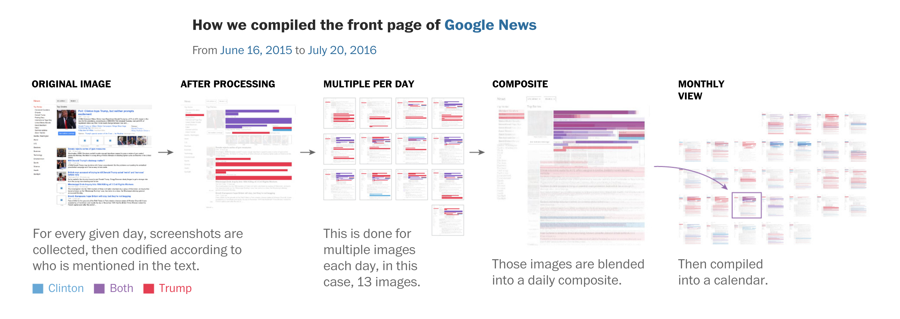
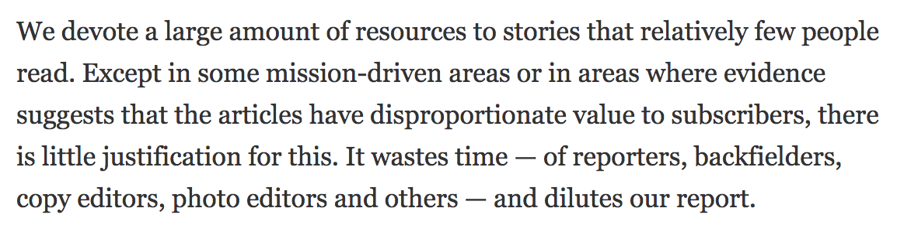

Extracting the full potential from data journalism in 2017
Key themes
• What does data journalism look like in 2017?
• Why is it important? How does it support the subscription business model for journalism?
• What do we need to have in place to do all of this?
• How do we know whether or not it’s working?
What does data journalism look like in 2017?
Data as an exclusive source
The raw materials of cutting-edge data journalism are bespoke or technically complex datasets whose creation, curation or comprehension requires either specialist data gathering skills, specialist data analysis skills, or both
Data as an exclusive source
This is increasingly where the value lies
More and more journalists of all descriptions are capable of locating and working with published datasets
// Spreadsheet journalism != data journalism
That should now be expected of any digital journalist. Writing stories based on the same numbers sitting in front of every reporter on your beat reduces your scope to provide unique value for your readers
Data as source
So...
The real value is to be found in developing your own datasets. Broadly speaking, this can be done in three ways:
• Creating a dataset from scratch
• Collecting or curating datasets to create something worth more than the sum of its parts
• Working with data in extraordinary formats or volumes
Creating a dataset
Case study: Washington Post | A visual history of Donald Trump dominating the news cycle
Combining datasets
Case study: FT | The demographics that drove Brexit
“Social science done on deadline”

Non-standard data formats
Case study: FT | What is El Niño and how does it affect global crop yields?

How does this support the subscription business model for journalism?
The New York Times just published a fantastic, detailed report
Among the highlights were:
• The success of its digital subscription model...

The New York Times just published a fantastic, detailed report
• The importance of visual elements to its future...

The New York Times just published a fantastic, detailed report
• The need to spend less time on low-value-added news, more on unique journalism...

The New York Times just published a fantastic, detailed report
• ...and the need to be smarter and more strict about efficient use of editorial resources
So where do data and graphics come in?
So where do data and graphics come in?
The products of cutting-edge data journalism are typically deep, detailed analyses and visualisations, but can also include quicker pieces in cases where the quality of the visual presentation or the exclusivity of the underlying data generate unique value
So where do data and graphics come in?
• They’re a great vehicle for differentiation through value-added journalism, and for brand-establishment/consolidation
• When used intelligently, they set you apart from your competitors and minimise the risk of being seen as “just doing what everyone else is doing”
So where do data and graphics come in?
• Readers will come to see them as a core part of your premium product

So where do data and graphics come in?
Data-driven journalism: Using scripts, tools, APIs to automate part of the process of routine journalism, thus freeing-up reporters’ time to spend on deeper, more complex, more fundamental stories and analysis
Graphics: A showpiece graphic whose visual strength and depth will attract, hold and reward readers’ attention might once have required several week’s work. Now the same impact can be achieved by one person in a day or two
So where do data and graphics come in?
Graphics and stats are inherently optimised for social
• “A picture speaks a thousand words”
• People love being able to share something which proves a point, debunks a myth etc. Stats and graphics lend themselves perfectly to this
• Social media streams are growing busier and busier. Clear, crisp graphics will stand out in those feeds, and if they tell a clear story or impart a message that taps into people’s emotions, they’ll fly
So what do we need to have in place to do all of this?
Where do we start?
• Quantitative methods: in statistical analysts, predictive modellers and "creative data collectors"
• Data visualisation: specialist in rich, non-standard graphics across static, interactive and animated forms
• Subject knowledge: collaborating with specialists elsewhere in the newsroom is ideal for deeper pieces, but for quicker hits — and best results all around — encourage technical specialists to pursue interests in core areas of the news agenda
Where do we start?
Technical specialists should have time built into their schedules to allow for expansion and or honing of their skill-sets
Where do we start?
Use graphics to tell stories. Every news organisation in the world could substantially improve the quality of its visual output without making any more charts. Lose the boring ones, lose those which are simply accompaniments to self-sufficient work. Lose the ones used purely “to break up the text”. Never commission a graphic because "it’s an important story, so it needs a graphic”
Where do we start?
Give your visual journalists editorial and creative agency. They and you will benefit enormously. The made-to-order bar chart is no better than the 400 word story that all of your competitors — and 50 other websites — has. It’s a low-value use of a high-value skillset, it does nothing to strengthen your journalism or your brand, and it can be demoralising for those involved
How do we know whether or not it’s working?
How do we know whether or not it’s working?
Signs of success include:
• Direct, verbal reader recognition of the added value provided by this work
• New subscriptions from — or first-time visitors to — these pieces of content
• High reach and engagement on social media
Any questions?
You can reach me on Twitter @jburnmurdoch or by email at john.burn-murdoch@ft.com
These slides are at bit.ly/ddj-manifesto